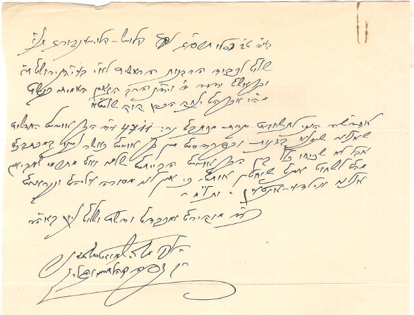

הרב משה שמואל זצ"ל משיב לשאלת הרב קוק זצ"ל על סוג של תרנגולי בר שגודלים לבד בשדות ובפרדסים והיו נראים אחרת מהתרנגולים הרגילים שהיו מגדלים אותם בחצרות הבתים בשביל הביצים ואכילת הבשר שלהם, וכתב לו שלא אוכלים את התרנגולי בר האלו, בגלל שאין לנו מסורת עליהם, והם נקראים באידיש "ווילדע אנדען" שזה תרנגולים פראיים-שובבים.

בע"ה
ט"ב כסליו תרס"ג קלוזש – קלויזנבורג תנ"י (תנצרהו ה')
שלום לכבוד הרבנות הראשית לא"י בעיה"ק ירושלים ת"ו
אחדש"ה ... לתשובת יקרת מכתבם נר: 4711 על דבר התרנגולים החדשים
כ"ד מוקירם ומכבדם ודש"ת ושלום ... באהבה רבה
הק' משה שמואל גלזנר
ובראשם ידיד ד' ויד"נ הרב הגאון האמיתי כקש"ת
מה"ו אברהם יצחק הכהן קוק שליט"א
שאצלנו, שנמצאים בגנות ובפרדסים, ... ... כאשר נכתב במכתבכם,
אבל לא שכיחו כלל בין התרנגולים הביתיים שלנו ואם מתרמי שמביאים
מהם לשחוט אין שוחטין אותם כי אין לנו מסורה עליהם ונקראים
אצלנו ווילדע – אנדען ותל"מ (ותו לא מידי)
רב דפה קהל קלוזש והגליל